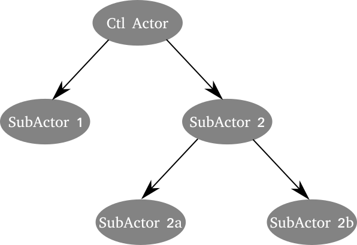
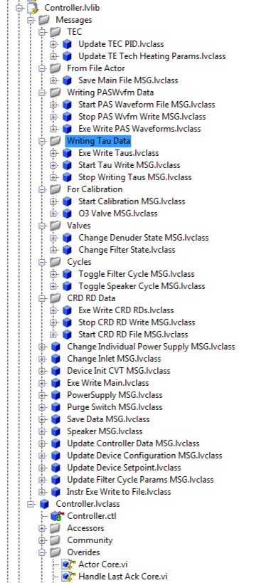
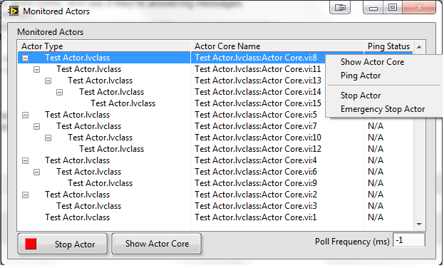
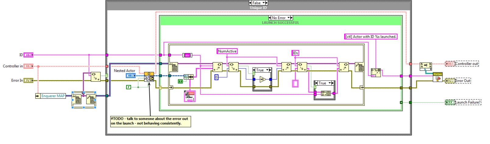
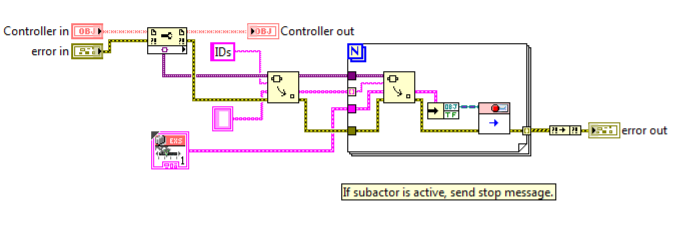
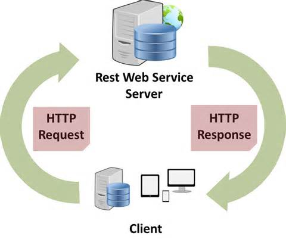
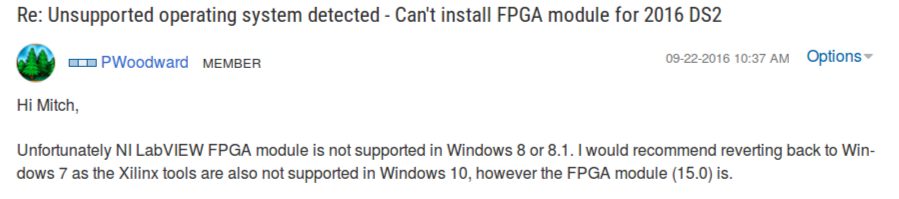

May 2017 ALARM Meeting

You're Doing it Wrong
A Case Study in Large Application Development
How to Aggravate your Customers and Guarantee Future Rework
About the project:
- For a customer a long long ways away...
- Large instrument consisting of a lot of devices/instruments running asynchronously.
This is going to be hard
Question: How could I make this even more difficult??
Make it...
Step 1: The Actor Framework
It's all about the message...
The AF is:
- Robust
- Adaptive
- Very modular
it isn't
- not complicated
Let's talk about structure

That's a helluva lot of boiler plate!

This train has got to stop!
My solution? The SuperActor!!
 Finally...
Debugging - a source of misery.
Hard on a Windows machine...
RT? Feels hopeless...
Step 2: Add a dash web Services
But why?
- Platform agnostic
- No LabVIEW RTE
Windows 10 is Terrible!
Great! Let's use web services - what could go wrong??
Passing Data
- It will be text
- It will be raw (if you are working with an RT system)
- And it might look something like this 700 kB mess.
So what's up - why no gzip??
Serialization - what's that?
"..serialization is the process of translating data structures or object state into a format that can be stored (for example, in a file or memory buffer, or transmitted across a network connection link) and reconstructed later in the same or another computer environment."
Nothing to see here. Nope.
And certainly not the AQ Character Lineator.
One last thing...
deployment of web services is terrible.
Really terrible.
Getting gud like Ronnie
So you think you want to do this??
- Check out Casey Lamers case study using the AF on the cRIO
- Have a plan and make sure you are following it...
- Build build build
- Have you considered throwing web sockets into the mix?
Thanks for listening!
Matt Richardson
cirrus@tuta.io
https://github.com/lo-co